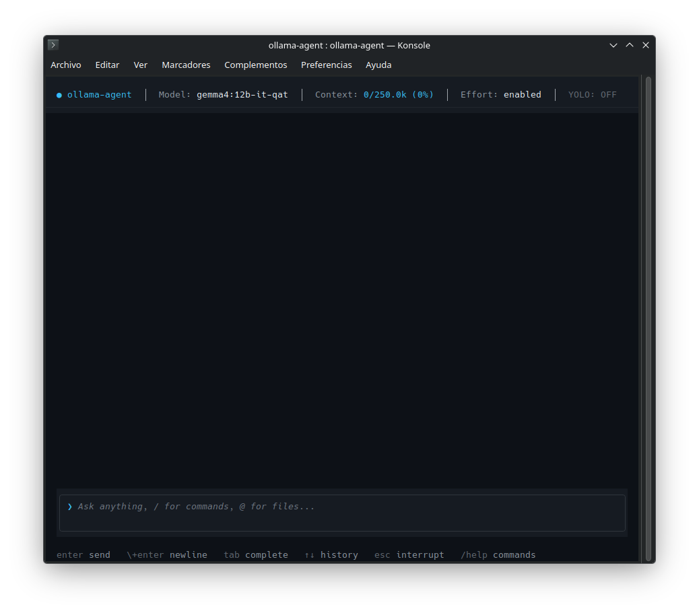
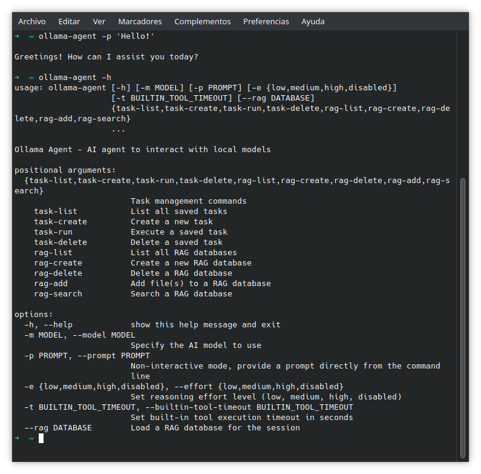

A powerful command-line interface and REPL for interacting with local Ollama models.
Built on DeepAgents and LangChain, featuring integrated shell execution, screen vision, memory management, RAG, and skills.


A modern terminal-based chat interface with rich Markdown support.
Slash Commands
| /new | Start a fresh session context |
| /history | View list of past sessions |
| /model-set <name> | Switch active Ollama model |
| /clear | Clear the current screen |
| /exit | Close the application |
Execute single-shot tasks directly from your shell.
CLI Args
| -p "..." | Prompt to execute immediately |
| --rag <db> | Use specific RAG database |
| --skills-dir <dir> | Add extra skills directory |
Contextual Retrieval Augmented Generation using local vector stores.
Management Commands
| /rag-create <name> | Initialize a new knowledge base |
| /rag-add <path> | Ingest file or directory |
| /rag-load <name> | Activate a specific DB |
Long-term persistence powered by Mem0 and Qdrant.
The agent automatically stores and retrieves user preferences and context across sessions.
Actions
| mem0_add_memory | Tool to explicitly save facts |
| mem0_search | Tool to recall information |
Give your agent eyes. Capture and analyze your screen contents.
Supported on Linux (X11/Wayland).
Syntax
| @dp0 | Capture primary display |
| @dp1 | Capture second monitor |
Define reusable workflows in YAML to automate complex queries.
Task Commands
| /tasks | List available tasks |
| /task-run <id> | Execute a specific task |
| /task-create | Interactive task builder |
Extend capabilities with Model Context Protocol servers.
Each configured MCP server is exposed as a delegation tool (use_<name>) backed by its own DeepAgents sub-agent using langchain-mcp-adapters. Edit ~/.ollama-agent/mcp_servers.json to add servers.
Reusable, on-demand agent capabilities following the Agent Skills specification.
Skills provide task-specific instructions via progressive disclosure — the agent only reads full instructions when a skill’s description matches the prompt, keeping the system prompt lean.
Skill Commands
| /skills | List all available skills |
| /skill-show <id> | View full skill details |
| /skill-create <id> | Interactive skill builder |
| /skill-delete <id> | Remove a skill |
The agent interacts with your system through a built-in shell middleware.
Shell commands are handled transparently via ShellToolMiddleware, removing the need for an explicit execute_command tool. The middleware integrates directly with the DeepAgents graph for seamless tool execution.
Built-in Tools
| Shell Middleware | Transparent command execution with configurable timeout |
| rag_search | Search loaded RAG knowledge bases |
| mem0_add_memory | Persist facts for the active user |
| mem0_search_memory | Recall stored information |
Requirements
Ensure you have Ollama running with a tool-capable model (like llama3.1) and an embedding model.
ollama pull gpt-oss:20b
ollama pull nomic-embed-textInstallation
pipx install git+https://github.com/arrase/ollama-agent.gitInteractive Mode
Start the chat interface to begin a session.
ollama-agentOne-off Commands
Execute a single prompt directly from your shell.
ollama-agent -p "Find large files in /var/log and summarize them"